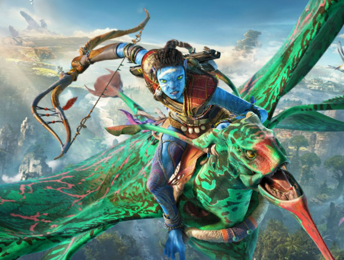
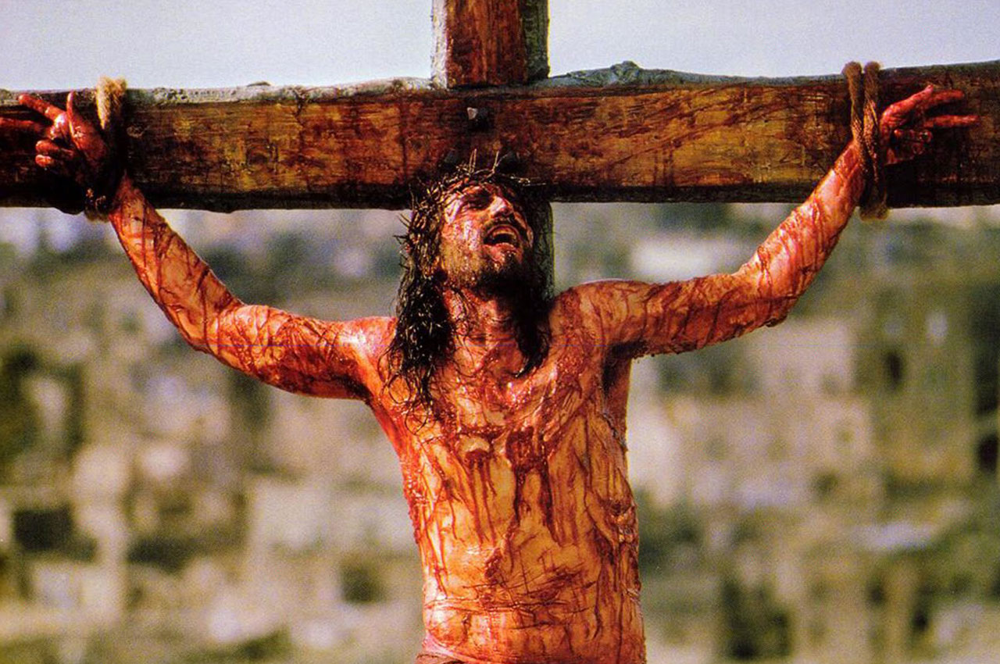

CORES
NO CINEMA
Explore o universo das cores, suas propriedades físicas, percepção visual e aplicações na arte, design e tecnologia.
Explore o universo das cores, suas propriedades físicas, percepção visual e aplicações na arte, design e tecnologia.

De acordo com a teoria de Plutchik (1980), as cores têm significados diferentes que despertam
determinadas emoções. O autor estudou as emoções utilizandose da psicologia evolutiva (emoções
evoluem e mudam conforme o tempo passa) e
utilizando-se das cores propôs uma Roda das Emoções contendo oito
sentimentos principais relacionados a oito cores determinadas pelo autor, tais como:
alegria/amarelo;
confiança/verde-claro;
medo/verde-escuro;
surpresa/azul-claro;
tristeza/azul-escuro;
aversão/lilás;
raiva/vermelho;
expectativa/laranja.
Ampliando esse sistema em um cone de três dimensões, encontra-se uma graduação de cores e
emoções de acordo com o que o ser humano interpreta.
Já o lilás costuma ser utilizado para trabalhar enredos etéreos e místicos, assim como o erotismo e
o mistério, uma vez que mescla tons azuis com a solidez e
sexualidade de outros tons mais quentes. Como exemplo, Avatar (figura 17), dirigido
por James Cameron, traz a história de um homem paraplégico que é chamado, no
lugar de seu irmão gêmeo falecido, para participar do programa Avatar.
Bellantoni (2005) afirma que é um sinal positivo quando a cor não é percebida
nas cenas, uma vez que a sutileza de tornar a cor parte da narrativa faz com que
todo o embasamento teórico estudado tenha surtido efeito. As questões complexas
de uma cena podem se transformar através do uso correto das cores a fim de evidenciar o sentido da
narrativa. Na Saga Harry Potter, o toque mágico é representado
por cores específicas que levam o público a se identificarem e entenderem a mensagem.
Assim como no filme A Paixão de Cristo que usa o tom vermelho, para literalmente identificar o como
o Sangue do Cordeio que foi derramado na cruz do calvário.

Empresas de tecnologia usam o azul porque a cor transmite confiança, segurança e inteligência.
Em aplicativos e plataformas digitais, o vermelho é muito usado em notificações e alertas porque
chama rapidamente a atenção do cérebro humano.
O famoso “dark mode” não é apenas estética. Interfaces escuras ajudam a diminuir o brilho excessivo das telas, especialmente em ambientes com pouca luz.
CRIE SEU PRÓPRIO CURTA
Como fazer a atividade no Canva (curta com música):
Acesse o Canva
Clique em “Criar um design”
Escolha “Vídeo” ou “Apresentação em vídeo”
Monte seu curta com:
Imagens ou vídeos
Textos (se quiser contar uma história)
Transições entre cenas